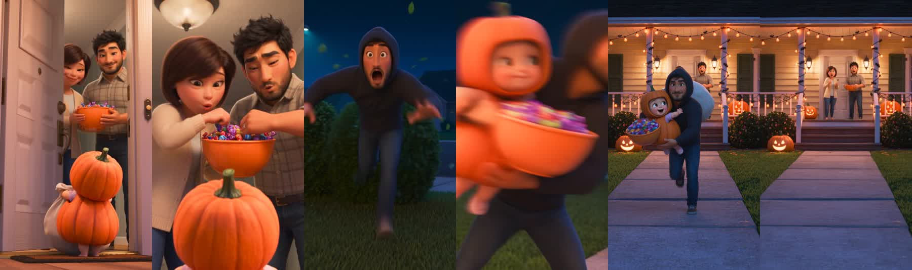

AVAI STUDIO · FREE PROMPT
Trick-or-Treat Reel: make it yourself
A toddler in a pumpkin costume gets her bag filled while Dad plans it all from the bushes. One 13-second clip, about 44 credits.

5 easy steps
- Open Higgsfield and choose Seedance 2.5. Set the format to 9:16, resolution 480p, length 13 s, audio on.
- Make or pick your characters. Ask an image model for a character sheet (same person, front, back and close-up on a plain gray background) for the toddler and for Dad. Attach both as reference images.
- Copy the prompt below and paste it. Add your reference images as Image 1 (toddler) and Image 2 (dad).
- Generate. Check that the toddler's face is clear in the first frame and the "Trick or treat!" line is easy to hear. If not, generate again.
- Upscale to 1080p and post it as a Reel. Keep the caption short, with a hook.
The prompt (short version)
Stylized 3D Pixar-style animation, soft painterly surfaces, warm orange porch light against a deep blue Halloween night, vertical 9:16, 13 seconds, 6 shots, 5 hard cuts, real-time motion. Image 1 = @daughter (toddler girl, curly hair in a top-knot) in a round orange pumpkin costume with a huge white candy bag. Image 2 = @dad (early 30s, short black hair, short beard) in a black hoodie with leaves in his hair. Two friendly neighbors (a woman with a candy bowl, a man in a flannel shirt) are described in words only.
Shot 1 (0-2.5s): low camera, @daughter's face fully visible and clear, nothing in front of her. The door opens. She looks up and says in a tiny cute voice: "Trick or treat!"
Shot 2 (2.5-5s): the neighbors melt ("Aww, so cute!") and fill her bag until it sags.
Shot 3 (5-7s): @dad crouches behind the hedge across the lawn, rubs his hands, whispers "That's my girl."
Shot 4 (7-9s): the neighbor man points: "Is that a man in the bushes?" @dad freezes, a leaf falls.
Shot 5 (9-11.5s): @dad bursts out shouting "Run!", scoops @daughter up under his arm. She grabs the whole candy bowl.
Shot 6 (11.5-13s): they sprint past the camera. She waves "Bye-bye!". The neighbors stand frozen, hands still shaped like an empty bowl.
No music, no on-screen text, no logos, no kissing. Only these characters exist. Each hand has five fingers.
This is the short version. The full prompt and both character-sheet prompts are in the detailed breakdown on Telegram.
Get started
Open Higgsfield Watch the reel Follow @avai.studio for more free promptsWant the full step-by-step breakdown with every exact prompt? It is in our Telegram channel (link on the @avai.studio profile).